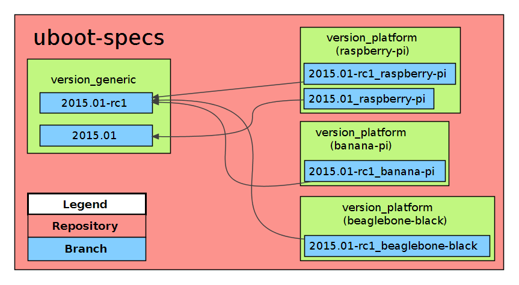

Implementation for building U-Boot
The design and the evaluation result in the following implementation.
Repository
The repository is called uboot-specs. Each platform/version combination gets its own branch, which will be referred as version_platform branch. Each version has also one branch, which will be referred as version_generic branch.

Important: Each version_platform branch depends on a version_generic branch.
version_generic
This branch exists exactly one time per U-Boot version. It contains the script, that downloads the sources for the version it is designed for. For obliterating the redundancy throughout the different platforms, it also implements the whole build process.
Build steps
- Download sources
- Build image
- Provide Output in archive
Build script
The following build script reflects the build steps.
version_platform
This branch exists for each platform as many times as different version of U-Boot should be built. It contains a build script, which will do the following:
Build steps
- Checkout the version_generic branch for the version which should be build
- Set necessary parameter e.g. configuration
- Execute the script from the version_generic branch
Build script
The following build script reflects the build steps.